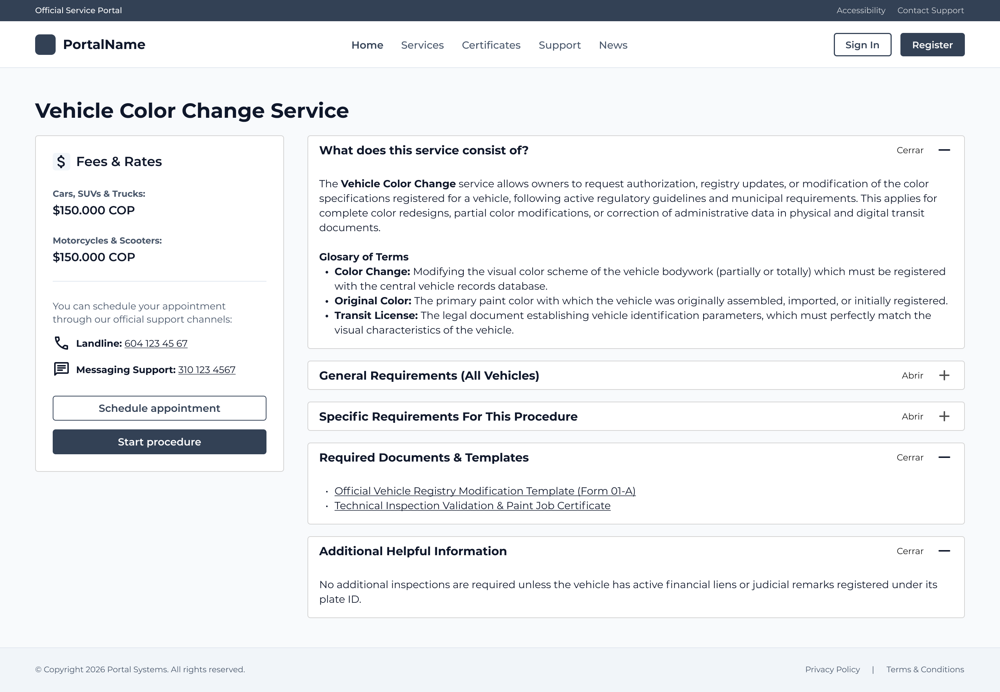
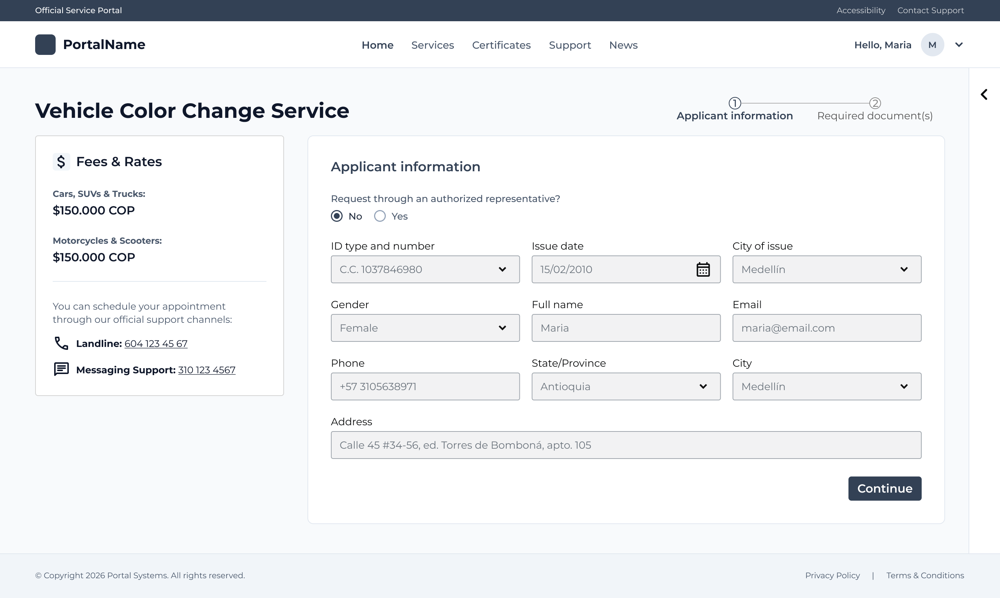
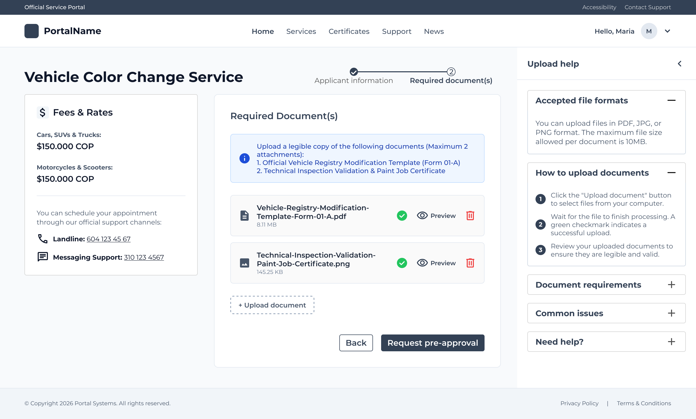

Confidential public-sector project
Government Services Platform
Designing, from a blank page, how citizens understand and complete complex government procedures.
My Role
Connecting structure, content and interaction decisions.
I led the end-to-end product design of this procedure experience, starting from a blank page with no existing platform to reference.
- Information Architecture
- UX Research synthesis
- User Flows
- Interaction Design
- UX Writing
- High Fidelity Prototypes
- Cross-functional collaboration
Overview
Government procedures felt harder to understand than they needed to be.
Citizens often approach government procedures without understanding requirements or expected outcomes up front. Important information tends to appear too late, technical terms are assumed to be understood, and required documents are listed with no clear order. The risk with formats like these is that friction comes from a high cognitive load, not a navigation problem.
This design set out to simplify procedures by helping citizens understand a process before starting it — reducing confusion and creating a scalable experience for future digital government services. The intent is to implement this framework at a national scale, so every procedure a citizen encounters feels familiar from the first one.
Process & Design System
A structured journey built for citizen comprehension.
I mapped the citizen journey from discovery to completion as one continuous, low-friction flow, then standardized the screen structure across different government procedures so each one feels instantly familiar.
Inform before asking
Citizens should understand a procedure before deciding to start it. The proposed flow introduces requirements, expected steps and outcomes before asking users to commit. This information is visible even without signing in, so citizens can evaluate a procedure before creating an account.

Reduce cognitive load
The experience was broken into smaller, focused steps rather than a single dense screen. More screens can feel simpler when each one carries a clear purpose.

Contextual help
Support appears exactly where and when users need it: guidance adapts to the current step, rather than living in a separate help document, so citizens can move forward with confidence.

A conclusion along the way
Reducing clicks does not necessarily reduce complexity.
One discovery changed the direction of the design: the experience did not need to be shorter at any cost, it needed to feel easier to understand. Reducing cognitive load became the design goal — in some cases, adding an extra screen created a simpler experience, because each step could focus on one decision at a time. Less effort was never about fewer clicks. It was about clearer decisions.
Outcome
Designed for implementation and future scale.
The project is still under implementation, so this case study does not claim metrics or business impact.
The intended impact is to reduce cognitive load, improve comprehension, encourage adoption of digital government services and create a scalable framework for future procedures. Every government procedure is different — the interaction pattern should not be. A reusable framework improves learnability across procedures as the platform scales.
Try It Yourself
Walk through the proposed flow.
An interactive walkthrough of the five screens a citizen sees end to end, from the service overview to the confirmation receipt.